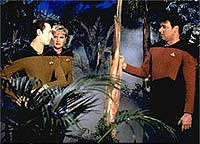
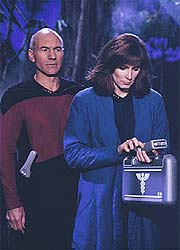
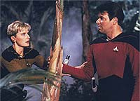
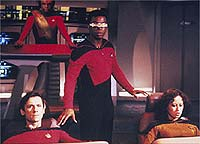
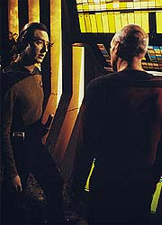

|
MANCHETE
DO EPISÓDIO
Episódio
dá chance a Geordi de crescer
ao assumir tarefa de comandar a nave
Episódio
anterior | Próximo
episódio
Sinopse:
Data Estelar: 41798.2.
A Enterprise visita o planeta Minos, para investigar o
desaparecimeno da USS Drake. Ao chegar, a tripulação é contactada
por uma mensagem pré-gravada de um vendedor de armamentos altamente
avançados. Isso não é surpreendente, já que o povo de Minos era
conhecido por ter vendido armas a outras civilizações durante as
guerras Erselrope.
 Um
grupo avançado é enviado à superfície do planeta, onde Riker,
Data e Yar são atacados por uma sonda. A tenente destrói a máquina,
mas não antes de Riker ser preso em um campo de força. Com a
captura de Riker, o capitão Picard decide por descer ao planeta,
juntamente com a dra. Crusher, para investigar o problema. Ao fugir
de um novo ataque, a dupla recém-chegada acaba por cair por um
buraco em uma caverna subterrânea. Na queda, a doutora sofre sérios
ferimentos.
Com o tempo, Data consegue libertar Riker, mas o grupo avançado não
consegue localizar Picard e Beverly. Enquanto isso, a Enterprise é
atacada por um inimigo camuflado, que La Forge tenta, sem sucesso,
conter. Até que a nave desenvolva meios de se proteger, La Forge não
tem chance de teleportar o grupo avançado de Minos.
 Nesse
meio tempo, Data consegue localizar a dupla perdida. A equipe
descobre que os ataques estão vindo de um sistema de defesa
controlado por computador que saiu do controle e destruiu a civilização
que o criou. Felizmente, Picard é capaz de desligar o sistema em
tempo de evitar qualquer baixa entre seus tripulantes.
Enquanto isso, La Forge consegue desenvolver um meio de localizar e
destruir seu atacante, induzindo-o a entrar na atmosfera do planeta,
o que o faz detectável em razão da perturbação causada pela
reentrada. Após destruir o inimigo, o engenheiro traz de volta o
grupo avançado e conduz a seção de engenharia até o reencontro
com a seção disco, devolvendo o comando ao capitão Picard.
Comentários:
"The Arsenal of Freedom" é um episódio
que consegue sobreviver à tendência da primeira temporada de histórias
permeadas por uma "moral da história" --não porque o
episódio não tenha essa característica, mas porque ele parece ter
conseguido superar esse empecilho.
 A
mensagem do episódio é simples, para não dizer velha. O feitiço
pode virar contra o feiticeiro. Naquele planeta, os sistemas de
defesa se tornaram tão eficientes que destruíram seus criadores.
História improvável, é verdade, mas que funciona enquanto metáfora
da relação entre o homem e suas máquinas.
A trama que se desenrola na superfície do planeta não é lá
grande coisa. Riker passa metade dela preso em uma redoma, após ter
alguns diálogos sem sentido com uma projeção de seu ex-colega de
Academia, o capitão Paul Rice. Data e Yar gastam o mesmo tempo
tentando tirar o primeiro-oficial de sua clausura, enquanto Picard e
Beverly Crusher aproveitam um pouco mais o tempo, ao serem obrigados
a conversar enquanto estão presos em uma caverna.
Mas o brilho do episódio fica todo com Geordi La Forge. O então
piloto é deixado no comando por Picard e acaba se vendo em uma
situação delicada. A confrontação dele com o engenheiro-chefe
Logan ajuda o personagem a se firmar perante a audiência.
A indecisa, mas precisa, atitude de La Forge ganha vida em uma boa
atuação de LeVar Burton. A seqüência em que ele separa a nave e
leva a seção de engenharia de volta a Minos, na tentativa de
resgatar o grupo avançado, com a posterior tática para destruir a
sonda que atacava a nave, foi o ponto alto do episódio.
 Também
é razoavelmente interessante, pela simplicidade, a solução da
trama no planeta: simplesmente desligá-la. Uma versão cômica
desse enredo pode ser vista na comédia "Corra que a Polícia
Vem Aí 2 1/2", em que o tenente Frank Drebin (interpretado
pelo impagável Leslie Nielsen) consegue desativar uma bomba atômica
no último segundo da contagem, ao tropeçar no fio da tomada que a
ligava à parede. Em "The Arsenal of Freedom", a
versão não é tão hilariante, mas funciona enquanto boa solução
da problemática do episódio.
A incoerência maior é o fato de a sonda espacial não sumir, como
fazem suas correspondentes terrestres, quando da finalização do
"teste". O erro é perdoável, entretanto, se lembrarmos
que isso tiraria totalmente o brilho de Geordi. Por outro lado, não
seria difícil corrigir tudo, com mera edição (colocando a ação
de Geordi antes e o desligamento depois).
 Em
termos técnicos --tirando as tomadas do espaço, que mostram sua
competência usual --o episódio é um fiasco. Um dos cenários de
planeta mais mal-feitos de toda a série, relembrando o baixo orçamento
da Série Clássica em plenos anos 60, e sondas totalmente
falsas e sem criatividade (muito similares a um antigo modelo, também
visto na série original) pavimentam as críticas mais relevantes.
No fim das contas, é inegável que o episódio guarda um certo
appeal próprio. Mas não que ele resista a uma análise crítica um
pouco mais sólida. Nem tanto ao céu, nem tanto à Terra.
Citações:
Troi - "What
happened to all the people?"
("O que aconteceu a todas as pessoas?")
Worf - "War?"
("Guerra?")
Data - "Disease?"
("Doença?")
Geordi - "A dissatisfied customer?"
("Um cliente insatisfeito?")
Picard - "Mister La Forge, when I left this ship it was in
one piece. I would appreciate you returning it to me in the same
condition."
("Senhor La Forge, quando eu deixei esta nave ela estava em um
pedaço. Eu apreciaria que o sr. a devolvesse nas mesmas condições.")
Trivia:
 Este episódio foi originalmente concebido como uma história de
amor entre Picard e a dra. Crusher, mas Gene Roddenberry mudou de idéia
e optou por fazer uma história sobre moralidade.
Este episódio foi originalmente concebido como uma história de
amor entre Picard e a dra. Crusher, mas Gene Roddenberry mudou de idéia
e optou por fazer uma história sobre moralidade.
Marco
Rodriguez, que aqui interpreta o capitão Paul Rice, voltaria como
um Cardassiano em "The Wounded",
da quarta temporada.
A
separação do disco da Enterprise, ocorrida neste episódio, só
seria vista novamente no quarto ano da série.
A
nave USS Drake é uma homenagem ao astrônomo Frank Drake, um dos
pioneiros em projetos de busca de inteligência extraterrestre (SETI).
Foi ele quem criou, no início dos anos 60, a famosa "equação
de Drake", que estima quantas civilizações avançadas devem
existir na Via Láctea.
Ficha
técnica:
História de Maurice Hurley
& Robert Lewin
Roteiro de Richard Manning & Robert Lewin
Direção de Les Landau
Exibido em 11/04/1988
Produção: 021
Elenco:
Patrick Stewart como
Jean-Luc Picard
Jonathan Frakes como William Thomas Riker
Brent Spiner como Data
LeVar Burton como Geordi La Forge
Michael Dorn como Worf
Gates McFadden como Beverly Crusher
Marina Sirtis como Deanna Troi
Wil Wheaton como Wesley Crusher
Denise Crosby como Natasha "Tasha" Yar
Elenco convidado:
Vincent Schiavelli
como O Vendedor
Marco Rodriguez como captain Paul Rice
Vyto Rugins como engenheiro-chefe Logan
Julia Nickson como tenente Lian T'Su
George De La Pena como tenente Solis
Episódio
anterior | Próximo
episódio
|